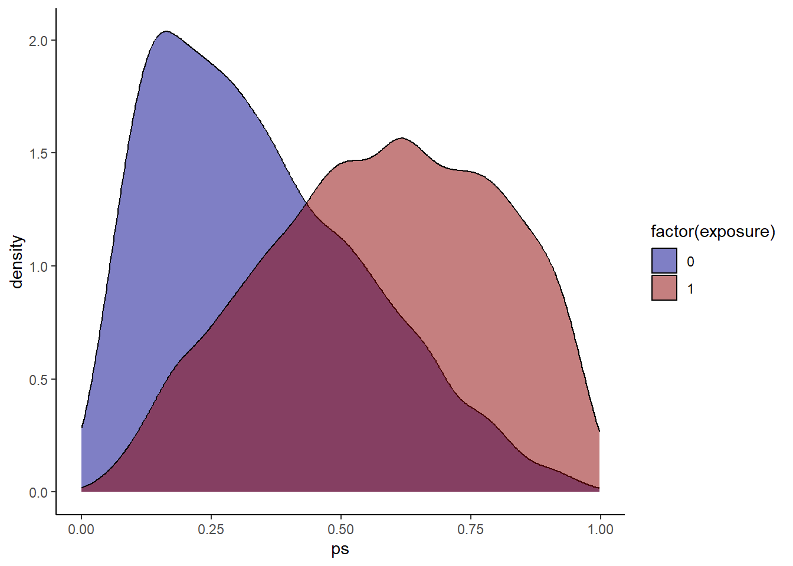
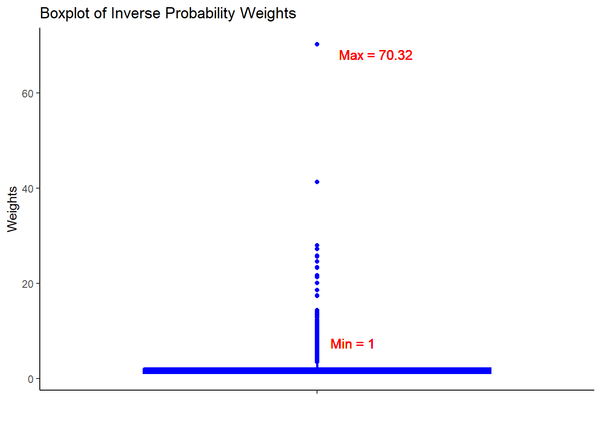
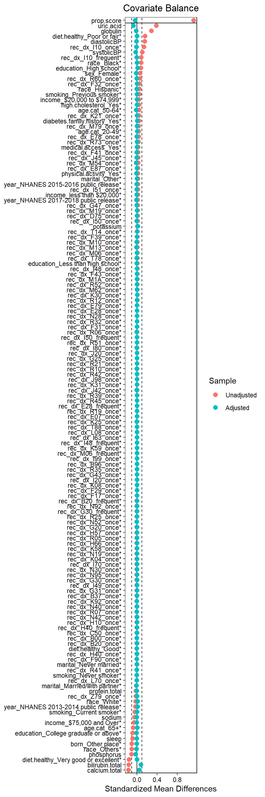

load("data/analytic3cycles.RData")Step 1: Proxy sources
Load saved data
We saved analytic3cycles.RData in Appendix. This contained the following datasets:
data.merged= merged data from 3 cycles,data.complete= complete case merged data,dat.proxy.long= only proxy information
Data with investigator-specified variables
Data: part 1
We will work with the data.complete data for the investigator-specified information.
analytic <- data.complete
idx <- analytic$id
outcome <- as.numeric(analytic$diabetes == "Yes")
exposure <- as.numeric(analytic$obese == "Yes")
domain <- "dx"
analytic.dfx <- as.data.frame(cbind(idx, exposure, outcome, domain))We prepare the minimal analytic data only with the following 4 information:
- identifying information (
idx) - exposure (
obese) - outcome (
diabetes) - domain of the codes (
dx). In this example we only have prescription domain (1 domaindx)
Proxy data
Identify the data dimensions (proxy sources)
In this example we only have prescription domain (1 domain dx of ICD-10-CM code). Hence \(p = 1\) in this exercise.
NHANES Questionnaire collects information on: (a) dietary supplements, (b) nonprescription antacids, (c) prescription medications, and (d) preventive aspirin use.
Define a covariate assessment period (CAP)
We only collect proxy information from a well-defined CAP. In our case, it was \(30\) days.
NHANES asked “In the past 30 days, have you used or taken medication for which a prescription is needed? Do not include prescription vitamins or minerals you may have already told me about.”
Data: part 2
We will work with the merge proxy data (ICD-10 codes) from 3 cycles: dat.proxy.long.
Omit duplicated information
We need to delete codes that could be close proxies of exposure and/or outcome, or other investigator specified covariates we have already selected in step0.
dat.proxy.long <- subset(dat.proxy.long,
icd10 != "E66") # Overweight and obesity
dat.proxy.long <- subset(dat.proxy.long,
icd10 != "O24") # Gestational diabetes mellitus
dat.proxy.long <- subset(dat.proxy.long,
icd10 != "E10") # Type 1 diabetes mellitus
dat.proxy.long <- subset(dat.proxy.long,
icd10 != "E11") # Type 2 diabetes mellitus- We delete codes associated with exposure and outcome.
- Same should be done for any other proxies that may have duplicating information compared to the investigator-specified covariates.
Long format proxy data
Here is an example of 3 digit codes for 1 patient with subject ID “100001”. We create the same for all patients.
| ID | ICD 10 codes (3 digit) | Description |
|---|---|---|
| 100001 | F33 | Major depressive disorder, recurrent |
| 100001 | I10 | Hypertension |
| 100001 | M62 | Muscle spasm |
| 100001 | F32 | Major depressive disorder, single episode |
| 100001 | M25 | Joint disorder/pain |
| 100001 | K21 | Gastro-esophageal reflux disease |
| 100001 | M79 | musculoskeletal pain conditions |
| 100001 | R12 | Heartburn |
Merge Proxy data with Analytic data
Merged Data: parts 1 and 2
- We will work with the merge proxy data with analytic data.
- That will provide us with the IDs (
idx) of the subject that have proxy (ICD-10) information associated with them.
require(dplyr)
dfx <- merge(analytic.dfx, proxy.var.long, by = "idx")
head(dfx) idx exposure outcome domain icd10
1 100001 1 0 dx F33
2 100001 1 0 dx M79
3 100001 1 0 dx F32
4 100001 1 0 dx R12
5 100001 1 0 dx M79
6 100001 1 0 dx K21basetable <- dfx %>% select(idx, exposure, outcome) %>% distinct()
patientIds <- basetable$idx
length(patientIds)[1] 7585Step 2: Empirical
Based on the merged dataset, we identify which patients were linked in both databases. Using those IDs, we want to sort the list of candidate empirical covariates.
Sort by prevalence
Check out the frequency of each codes:
library(dplyr)
df <- data.frame(
icd10 = names(sort(table(dfx$icd10), decreasing = TRUE)),
count = sort(table(dfx$icd10), decreasing = TRUE)
)| ICD10 Code | Count |
|---|---|
| I10 | 5742 |
| E78 | 2965 |
| F32 | 1135 |
| F41 | 1090 |
| K21 | 911 |
| M79 | 870 |
| E03 | 807 |
| M54 | 772 |
| G47 | 697 |
| J45 | 626 |
Only top 10 prevalent codes are shown.
However, some may be associated with lower counts (e.g., less than 20).
Restrictions
Candidate empirical covariates list is constrained by
- their prevalence of codes. Only top
ncovariates with highest prevalence would be chosen. - analysts absolutely need to get rid of the codes that have zero variance (e.g., everyone has the code, or nobody has it).
- codes associated with very low prevalence are also numerically problematic for further analyses.
We choose n = 200 [for (1)] as it was proposed in the original algorithm. In reality, this is not necessary to be so restrictive. Parts (2) and (3) are more likely and addressed by the following restriction: At least min_num_patients number of patients need to have that code to be selected in the list.
If there were more dimensions, separate list of candidate empirical covariates would be identified.
Choose Granularity
One important point here is that we have chosen granularity to be 3 digits in the ICD-10 code.
We have already truncated the codes at 3 digit level while preparing the data.
Retain top n empirical covariates
require(autoCovariateSelection)
step1 <- get_candidate_covariates(df = dfx,
domainVarname = "domain",
eventCodeVarname = "icd10",
patientIdVarname = "idx",
patientIdVector = patientIds,
n = 200,
min_num_patients = 20)You can use autoCovariateSelection package to implement these restrictions.
Long format data
out1 <- step1$covars_data
head(out1) idx icd10
1 100001 dx_M79
2 100001 dx_F32
3 100001 dx_R12
4 100001 dx_M79
5 100001 dx_K21
6 100001 dx_I10Updated frequency data
df2 <- data.frame(
icd10 = names(table(out1$icd10)),
count = as.numeric(table(out1$icd10))
)| ICD10 Code | Count |
|---|---|
| dx_A49 | 44 |
| dx_B00 | 35 |
| dx_B20 | 44 |
| dx_B35 | 41 |
| dx_B37 | 20 |
| dx_B96 | 30 |
Only first few code frequencies are shown (alphabetic order), that were selected based on the restrictions n = 200 and min_num_patients = 20.
| ICD10 Code | Count | |
|---|---|---|
| 121 | dx_R73 | 431 |
| 122 | dx_T14 | 167 |
| 123 | dx_T78 | 201 |
| 124 | dx_T88 | 23 |
| 125 | dx_Z79 | 489 |
| 126 | dx_Z95 | 26 |
Only last few code frequencies are shown (alphabetic order).
Total number of codes retained
nrow(df2)[1] 126Step 3: Recurrence
Genrate recurrence covariates
In this step, we generate 3 binary recurrence covariates for each of the candidate empirical covariates identified in the previous step:
- occurred at least once
- occurred sporadically (at least more than the median)
- occurred frequently (at least more than the 75th percentile)
step2 <- get_recurrence_covariates(df = out1,
patientIdVarname = "idx",
eventCodeVarname = "icd10",
patientIdVector = patientIds)Example of recurrence covariates
| ICD-10-CM code (dimension 1) | code appeared at least once | code appeared at least more than the median | code appeared at least more than the 75th percentile |
|---|---|---|---|
| D64.9 Anemia | rec_dx_D64_once | rec_dx_D64_sporadic | rec_dx_D64_frequent |
| D75.9P Blood clots | rec_dx_D75_once | rec_dx_D75_sporadic | rec_dx_D75_frequent |
| D89.9 Immune disorder | rec_dx_D89_once | rec_dx_D89_sporadic | rec_dx_D89_frequent |
| \(\ldots\) | \(\ldots\) | \(\ldots\) | \(\ldots\) |
| E07.9 Disorder of thyroid | rec_dx_E07_once | rec_dx_E07_sporadic | rec_dx_E07_frequent |
Example of 3 binary covariates (hypothetical) created based on the candidate empirical covariates.
Recurrence covariates in the data
out2 <- step2$recurrence_data
ncol(out2)[1] 143names(out2) [1] "idx" "rec_dx_A49_once" "rec_dx_B00_once"
[4] "rec_dx_B20_once" "rec_dx_B20_frequent" "rec_dx_B35_once"
[7] "rec_dx_B37_once" "rec_dx_B96_once" "rec_dx_C50_once"
[10] "rec_dx_D75_once" "rec_dx_E03_once" "rec_dx_E04_once"
[13] "rec_dx_E05_once" "rec_dx_E07_once" "rec_dx_E28_once"
[16] "rec_dx_E28_frequent" "rec_dx_E29_once" "rec_dx_E78_once"
[19] "rec_dx_E79_once" "rec_dx_E87_once" "rec_dx_F17_once"
[22] "rec_dx_F20_once" "rec_dx_F20_frequent" "rec_dx_F29_once"
[25] "rec_dx_F31_once" "rec_dx_F31_frequent" "rec_dx_F32_once"
[28] "rec_dx_F39_once" "rec_dx_F41_once" "rec_dx_F43_once"
[31] "rec_dx_F90_once" "rec_dx_G20_once" "rec_dx_G20_frequent"
[34] "rec_dx_G25_once" "rec_dx_G30_once" "rec_dx_G30_frequent"
[37] "rec_dx_G31_once" "rec_dx_G40_once" "rec_dx_G43_once"
[40] "rec_dx_G47_once" "rec_dx_G89_once" "rec_dx_H04_once"
[43] "rec_dx_H10_once" "rec_dx_H40_once" "rec_dx_H40_frequent"
[46] "rec_dx_H57_once" "rec_dx_H57_frequent" "rec_dx_H66_once"
[49] "rec_dx_I10_once" "rec_dx_I10_frequent" "rec_dx_I20_once"
[52] "rec_dx_I21_once" "rec_dx_I48_once" "rec_dx_I48_frequent"
[55] "rec_dx_I49_once" "rec_dx_I50_once" "rec_dx_I50_frequent"
[58] "rec_dx_I51_once" "rec_dx_I63_once" "rec_dx_I70_once"
[61] "rec_dx_I80_once" "rec_dx_I99_once" "rec_dx_J01_once"
[64] "rec_dx_J02_once" "rec_dx_J20_once" "rec_dx_J30_once"
[67] "rec_dx_J40_once" "rec_dx_J42_once" "rec_dx_J43_once"
[70] "rec_dx_J43_frequent" "rec_dx_J44_once" "rec_dx_J44_frequent"
[73] "rec_dx_J45_once" "rec_dx_J45_frequent" "rec_dx_J98_once"
[76] "rec_dx_K04_once" "rec_dx_K08_once" "rec_dx_K21_once"
[79] "rec_dx_K25_once" "rec_dx_K27_once" "rec_dx_K30_once"
[82] "rec_dx_K31_once" "rec_dx_K58_once" "rec_dx_K59_once"
[85] "rec_dx_K76_once" "rec_dx_K92_once" "rec_dx_L08_once"
[88] "rec_dx_L20_once" "rec_dx_L23_once" "rec_dx_L29_once"
[91] "rec_dx_L40_once" "rec_dx_L70_once" "rec_dx_L93_once"
[94] "rec_dx_L93_frequent" "rec_dx_M06_once" "rec_dx_M06_frequent"
[97] "rec_dx_M10_once" "rec_dx_M13_once" "rec_dx_M19_once"
[100] "rec_dx_M1A_once" "rec_dx_M25_once" "rec_dx_M54_once"
[103] "rec_dx_M62_once" "rec_dx_M79_once" "rec_dx_M81_once"
[106] "rec_dx_N19_once" "rec_dx_N20_once" "rec_dx_N28_once"
[109] "rec_dx_N30_once" "rec_dx_N32_once" "rec_dx_N39_once"
[112] "rec_dx_N40_once" "rec_dx_N42_once" "rec_dx_N52_once"
[115] "rec_dx_N92_once" "rec_dx_N94_once" "rec_dx_N95_once"
[118] "rec_dx_R00_once" "rec_dx_R05_once" "rec_dx_R06_once"
[121] "rec_dx_R07_once" "rec_dx_R09_once" "rec_dx_R10_once"
[124] "rec_dx_R11_once" "rec_dx_R12_once" "rec_dx_R19_once"
[127] "rec_dx_R21_once" "rec_dx_R25_once" "rec_dx_R32_once"
[130] "rec_dx_R35_once" "rec_dx_R39_once" "rec_dx_R41_once"
[133] "rec_dx_R42_once" "rec_dx_R45_once" "rec_dx_R51_once"
[136] "rec_dx_R52_once" "rec_dx_R60_once" "rec_dx_R73_once"
[139] "rec_dx_T14_once" "rec_dx_T78_once" "rec_dx_T88_once"
[142] "rec_dx_Z79_once" "rec_dx_Z95_once" rec_dx_B20_once rec_dx_B20_frequent
6317 1 1
6889 1 0
6980 1 1
7007 1 0
7409 1 0
7461 1 1Here we show binary recurrence covariates for only 2 columns
Refined recurrence covariates
Below you can click to see a list of all recurrence covariates obtained in our data.
Tip
- Given that we had one dimension of proxy data, \(p=1\), at most \(n=200\) most prevalent codes (with the restriction that minimum number of patients in each code = 20), and \(3\) intensity, we could theoretically have at most \(p \times n \times 3 = 1 \times 200 \times \ 3 = 600\) recurrence covariates.
- Based on all of the restrictions, we created 143 distinct recurrence covariates.
- The merged data (analytic and proxies) size is now 7,585.
- If 2 or all 3 recurrence covariates are identical, only one distinct recurrence covariate is returned. This is why you do not see any sporadic recurrence covariate here.
- Recurrence covariate creation is for each patient, and it is possible to have same code occur multiple time because we are working with a 3 digit granularity (possible to have medications from other codes within same ICD-10 3 digit granularity).
Step 4: Prioritize
Bross formula
We need to make an educated guess about 3 components (i.e., make an assumption), that are used in the calculation of bias contributed by not adjusting for a covariate based on Bross (1966) formula:
Bross formula for the Bias Multiplier considers both the imbalance in the prevalence of the unmeasured confounder between the exposure groups and the association between the confounder and the outcome to assess the potential bias.
- prevalence of a binary unmeasured confounder (\(U\)) among exposed (\(P_{UA_1}\))
- prevalence of that binary unmeasured confounder among unexposed (\(P_{UA_0}\))
- association between that binary unmeasured confounder and the outcome (\(RR_{UY} = \frac{P_{UY_1}}{P_{UY_1}}\))
The above components can help us calculate \(bias\) amount (known as ‘Bias Multiplier’) using the Bross formula when we omit adjusting for \(U\):
\[\text{Bias}_U = \frac{P_{UA_1} (RR_{UY} - 1) + 1}{P_{UA_0} (RR_{UY} - 1) + 1}\]
These are the ingredients of the Bross formula. This formula is helpful for understanding the impact of unmeasured confounding of a binary variable. We have to put assumed prevalence and risk ratio associated with an unmeasured confounder.
Calculating bias from a recurrence covariate
For recurrence covariates (\(R\)), we do not need to assume, we just plug-in \(R\) instead of \(U\) in the following calculations:
- prevalence of a binary recurrence variable among exposed (\(P_{RA_1}\))
- prevalence of that binary recurrence variable among unexposed (\(P_{RA_0}\))
- association between that binary recurrence variable and the outcome (\(RR_{RY} = \frac{P_{RY_1}}{P_{RY_1}}\))
These components can help us empirically calculate \(bias\) amount:
\[\text{Bias}_R = \frac{P_{RA_1} (RR_{RY} - 1) + 1}{P_{RA_0} (RR_{RY} - 1) + 1}\]
Here, \(RR_{RY}\) is the crude risk ratio between the recurrence covariate and the outcome, \(Y\) is the outcome, \(A\) is the exposure, and \(R\) is a recurrence covariate.
For recurrence covariates, we do not need to assume, we can basically calculate these numbers (\(log-absolute-bias\)) for all of the recurrence covariates. For each data dimension, we can rank each of the recurrence covariates based on the amount of bias (confounding or imbalance) it could likely adjust.
Calculating bias from all recurrence covariates
In our example, we simply plug-in each recurrence covariates one-by-one to calculate \(log-absolute-bias\):
| R=rec_dx_D64_once |
| R=rec_dx_D75_sporadic |
| … |
| R=rec_dx_E07_frequent |
Obtain log of absolute-bias
We calculate \(log-absolute-bias\) for all recurrence covariates.
Absolute log of the Bias Multiplier, \(log-absolute-bias\), is a symmetric measure of the potential bias introduced by the recurrence covariate, making it easier to compare and rank recurrence covariates.
out3 <- get_prioritised_covariates(df = out2,
patientIdVarname = "idx",
exposureVector = basetable$exposure,
outcomeVector = basetable$outcome,
patientIdVector = patientIds,
k = 100)
sorted_values <- sort(out3$multiplicative_bias,
decreasing = TRUE)This would return absolute log of the multiplicative bias for each recurrence covariate (by univariate Bross formula). We can use this information to prioritize recurrence covariates in the next step.
Convert to Absolute log of multiplicative bias
Here are the few covariates and associated Absolute log of the multiplicative bias:
| rec_dx_I10_once : 0.115 |
| rec_dx_R73_once : 0.088 |
| rec_dx_I10_frequent : 0.068 |
| rec_dx_R60_once : 0.054 |
| rec_dx_E78_once : 0.038 |
| rec_dx_M79_once : 0.017 |
| rec_dx_E87_once : 0.015 |
| rec_dx_I51_once : 0.013 |
| rec_dx_I50_once : 0.011 |
And here are translated table with description:
| Hypertension : 0.115 |
| Elevated blood glucose level : 0.088 |
| Hypertension : 0.068 |
| Edema : 0.054 |
| Pure hypercholesterolemia : 0.038 |
| musculoskeletal pain : 0.017 |
| Hypokalemia : 0.015 |
| Heart disease : 0.013 |
| Heart failure : 0.011 |
Some of the empirical covariates with top Absolute log of the multiplicative bias are actually relevant to the outcome (diabetes): Hypertension, Elevated blood glucose level , etc.
SMD vs Bias multiplier
Standardized mean difference (SMD) is useful for assessing the balance in the propensity score literature. However, Bross formula incorporates outcome information. In the investigation of empirical covariates or recurrence covariates where interpretations of these covariates are unknown, it may seem more safe to use the multiplicative bias term from the Bross formula to identify proxy covariates that are helpful in predicting the outcome.
Step 5: Covariates
We select 2 types of covariates for the next step (to analyze using propensity score or other alternative approaches):
Ideal number of prioritised covariates
Based on calculated \(log-absolute-bias\), we select top k recurrence covariates to be used in the hdPS analyses later.
We used \(k = 100\) covariates selected by the hdPS algorithm (we call them ‘hdPS covariates’). What should be the cutpoint?
- Absolute log of the Bias Multiplier has a null value of 0. Anything above 0 is an indication of confounding bias adjusted by the adjustment of the associated recurrent covariate.
- For large proxy data sources, \(k = 500\) is suggested.
- See Sensitivity Analysis section for an understanding of how to choose a value based on an ad-hoc process.
Selected hdPS variables (proxies)
hdps.dim <- out3$autoselected_covariate_df
dim(hdps.dim) # id + k[1] 7585 101head(hdps.dim)[,1:3] idx rec_dx_I10_once rec_dx_R73_once
1 100001 1 0
2 100008 1 0
3 100012 1 0
4 100015 0 0
5 100018 0 0
6 100020 1 1hdps.dim$id <- hdps.dim$idx
hdps.dim$idx <- NULLInvestigator-specified covariates
\(25\) investigator-specified covariates are selected based on variables in the DAG that are available in the data set.
We should also add necessary interactions of these investigator-specified covariates, or add other useful model-specifications (e.g., polynomials).
- 14 demographic, behavioral, health history related variables/access
- Mostly categorical
- 11 lab variables
- Mostly continuous
exposure <- "obese"
outcome <- "diabetes"
investigator.specified.covariates <-
c(# Demographic
"age.cat", "sex", "education", "race",
"marital", "income", "born", "year",
# health history related variables/access
"diabetes.family.history", "medical.access",
# behavioral
"smoking", "diet.healthy", "physical.activity", "sleep",
# Laboratory
"uric.acid", "protein.total", "bilirubin.total", "phosphorus",
"sodium", "potassium", "globulin", "calcium.total",
"systolicBP", "diastolicBP", "high.cholesterol"
)
length(investigator.specified.covariates)[1] 25Merged data
load("data/analytic3cycles.RData")
hdps.data <- merge(data.complete[,c("id",
outcome,
exposure,
investigator.specified.covariates)],
hdps.dim, by = "id")
dim(hdps.data)[1] 7585 128Variable count (128)
- 1 ID variable
- 1 exposure
- 1 outcome
- 25 investigator-specified covariates
- 100 hdPS variables
Step 6: Propensity
hdPS model
C = investigator-specified covariates and EC = hdPS covariates
Then the hdPS can be used as matching, weighting, stratifying variables, or as covariates (usually in deciles) in outcome model.
Create propensity score formula
hdps.data$exposure <- as.numeric(I(hdps.data$obese=='Yes'))
hdps.data$outcome <- as.numeric(I(hdps.data$diabetes=='Yes'))
proxy.list.sel <- names(out3$autoselected_covariate_df[,-1])
length(proxy.list.sel)[1] 100proxyform <- paste0(proxy.list.sel, collapse = "+")
covform <- paste0(investigator.specified.covariates, collapse = "+")rhsformula <- paste0(c(covform, proxyform), collapse = "+")
ps.formula <- as.formula(paste0("exposure", "~", rhsformula))
ps.formulaexposure ~ age.cat + sex + education + race + marital + income +
born + year + diabetes.family.history + medical.access +
smoking + diet.healthy + physical.activity + sleep + uric.acid +
protein.total + bilirubin.total + phosphorus + sodium + potassium +
globulin + calcium.total + systolicBP + diastolicBP + high.cholesterol +
rec_dx_I10_once + rec_dx_R73_once + rec_dx_I10_frequent +
rec_dx_R60_once + rec_dx_E78_once + rec_dx_M79_once + rec_dx_E87_once +
rec_dx_I51_once + rec_dx_I50_once + rec_dx_D75_once + rec_dx_K21_once +
rec_dx_Z79_once + rec_dx_N28_once + rec_dx_F41_once + rec_dx_E79_once +
rec_dx_M10_once + rec_dx_M1A_once + rec_dx_L70_once + rec_dx_F32_once +
rec_dx_I80_once + rec_dx_F90_once + rec_dx_F43_once + rec_dx_I50_frequent +
rec_dx_B00_once + rec_dx_R12_once + rec_dx_N19_once + rec_dx_B20_once +
rec_dx_E28_frequent + rec_dx_R07_once + rec_dx_M19_once +
rec_dx_I48_once + rec_dx_G47_once + rec_dx_T14_once + rec_dx_I70_once +
rec_dx_M06_once + rec_dx_N40_once + rec_dx_R51_once + rec_dx_R21_once +
rec_dx_J45_once + rec_dx_H40_once + rec_dx_K31_once + rec_dx_I63_once +
rec_dx_H10_once + rec_dx_R52_once + rec_dx_R19_once + rec_dx_N95_once +
rec_dx_K92_once + rec_dx_J20_once + rec_dx_E28_once + rec_dx_R32_once +
rec_dx_M13_once + rec_dx_G30_once + rec_dx_J98_once + rec_dx_N52_once +
rec_dx_I49_once + rec_dx_N30_once + rec_dx_N42_once + rec_dx_R39_once +
rec_dx_N92_once + rec_dx_B96_once + rec_dx_H40_frequent +
rec_dx_M54_once + rec_dx_K59_once + rec_dx_G25_once + rec_dx_F31_once +
rec_dx_T78_once + rec_dx_R41_once + rec_dx_G31_once + rec_dx_I99_once +
rec_dx_G30_frequent + rec_dx_C50_once + rec_dx_F39_once +
rec_dx_R06_once + rec_dx_F17_once + rec_dx_K30_once + rec_dx_R45_once +
rec_dx_K25_once + rec_dx_B37_once + rec_dx_L08_once + rec_dx_T88_once +
rec_dx_J42_once + rec_dx_R10_once + rec_dx_M06_frequent +
rec_dx_G20_once + rec_dx_E07_once + rec_dx_K58_once + rec_dx_R35_once +
rec_dx_K04_once + rec_dx_R05_once + rec_dx_K08_once + rec_dx_I20_once +
rec_dx_H57_once + rec_dx_R25_once + rec_dx_H66_once + rec_dx_R42_once +
rec_dx_B20_frequent + rec_dx_I48_frequent + rec_dx_M62_once +
rec_dx_G43_once + rec_dx_F29_onceThis is an overly simplistic scenario where we are adding only the main effects in the non-transformed form.
Fit PS model
require(WeightIt)
W.out <- weightit(ps.formula,
data = hdps.data,
estimand = "ATE",
method = "ps")Obtain PS
hdps.data$ps <- W.out$ps
Always a good idea to check propensity score overlap in both exposure groups
Obtain Weights
hdps.data$w <- W.out$weights
Always a good idea to check the summary statistics of the weights to assess whether there are extreme weights
Assessing balance

Always a good idea to assess balance. Here we are measuring against SMD 0.1. Use love.plot function from the cobalt package. See more descriptions of balanced diagnostics elsewhere for a propensity score context.
Step 7: Association
Set outcome formula
out.formula <- as.formula(paste0("outcome", "~", "exposure"))
out.formulaoutcome ~ exposureObtain OR from unadjusted model
fit <- glm(out.formula,
data = hdps.data,
weights = W.out$weights,
family= binomial(link = "logit"))
fit.summary <- summary(fit)$coef["exposure",
c("Estimate",
"Std. Error",
"Pr(>|z|)")]
fit.ci <- confint(fit, level = 0.95)["exposure", ]
fit.summary_with_ci <- c(fit.summary, fit.ci)
knitr::kable(t(round(fit.summary_with_ci,2))) | Estimate | Std. Error | Pr(>|z|) | 2.5 % | 97.5 % |
|---|---|---|---|---|
| 0.39 | 0.04 | 0 | 0.32 | 0.47 |
- We are using a crude outcome model here.
- Somewhat controversial to adjust for all (investigator-specified and all 100 proxies) covariates.
Obtain RD from unadjusted model
fit <- glm(out.formula,
data = hdps.data,
weights = W.out$weights,
family= gaussian(link = "identity"))
fit.summary <- summary(fit)$coef["exposure",
c("Estimate",
"Std. Error",
"Pr(>|t|)")]
fit.summary[2] <- sqrt(sandwich::sandwich(fit)[2,2])
require(lmtest)
conf.int <- confint(fit, "exposure", level = 0.95, method = "hc1")
fit.summary <- c(fit.summary, conf.int)
knitr::kable(t(round(fit.summary, 2))) | Estimate | Std. Error | Pr(>|t|) | 2.5 % | 97.5 % |
|---|---|---|---|---|
| 0.07 | 0.01 | 0 | 0.05 | 0.09 |